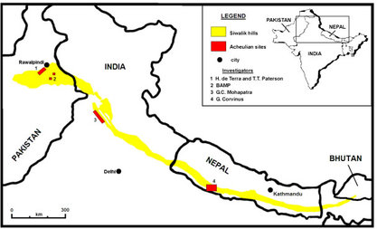
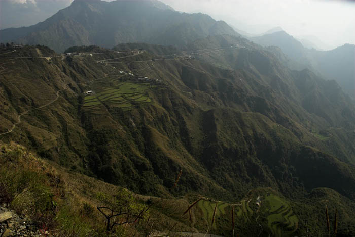

shiwaiks or outer himalayas
Siwalik Range, also called Siwalik Hills or Outer Himalayas, Siwalik also spelled Shiwalik,
sub-Himalayan range of the northern Indian subcontinent. It extends west-northwestward for more
than 1,000 miles (1,600 km) from the Tista River in Sikkim state, northeastern India, through Nepal,
across northwestern India, and into northern Pakistan. Though only 10 miles (16 km) wide in places,
the range has an average elevation of 3,000 to 4,000 feet (900 to 1,200 metres)
It rises abruptly from the plain of the Indus and Ganges (Ganga) rivers (south) and parallels the
main range of the Himalayas (north), from which it is separated by valleys. The Siwaliks are
sometimes considered to include the southern foothills of the Assam Himalayas, which extend
eastward for 400 miles (640 km) across southern Bhutan to the bend of the Brahmaputra River.
The range proper, to which the name Siwalik (from Sanskrit, meaning “Belonging to [the God] Shiva”)
was formerly restricted, is the 200 miles (320 km) of foothills in India extending from the
Ganges River at Haridwar, Uttarakhand state, northwestward to the Beas River


Geology
Geologically, the Sivalik Hills belong to the
Tertiary deposits
of the outer Himalayas. They are chiefly composed of
sandstone
and
conglomerate rock
formations, which are the solidified detritus of the Himalayas to their north; they are poorly
consolidated. The remnant magnetisation of siltstones and sandstones indicates that they were
deposited 16–5.2 million years ago. In Nepal, the
Karnali River
exposes the oldest part of the Shivalik Hills
related tags